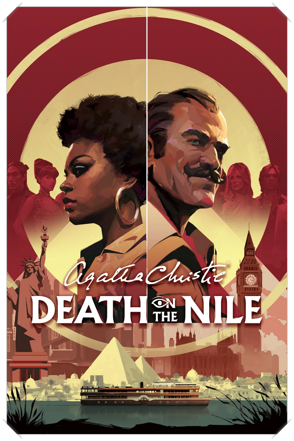

Agatha Christie: Death on the Nile
Every archived year-end list appearance, including placement and points earned.
About the Game
In Death on the Nile, a peaceful cruise on the Nile is disrupted by a terrible crime. Thankfully, famous detective Hercule Poirot is onboard. Meanwhile, a private detective is tracking a murderer, leading her from London to Majorca, New York, and finally to Egypt. The two investigations collide at Abu Simbel. The dynamic duo will solve a complex case full of twists and turns. But the story doesn’t end with the book, and it still holds many mysteries and twists, even for Agatha Christie fans. Dual Protagonists: Play as both Hercule Poirot and Jane Royce, each with unique perspectives and storylines that converge in an epic finale. Innovative Setting: Immerse yourself in this story set in the 1970s, a decade of significant social change. From feminist movements and the rise of minority rights to the liberation of societal norms, this vibrant era blends disco clubs, bell-bottoms, and psychedelia, where colorful characters bring a captivating plot to life. Extended Storyline: Dive into a brand-new investigation that continues after the events of the book, ensuring fresh surprises for fans and newcomers alike. Diverse Locations: Explore a variety of stunning locations, from the exotic Nile cruise to the bustling cities of Majorca, London, and Cairo. Enhanced Mindmap: Collect and connect facts in a dynamic mindmap to make deductions and advance the story. Confrontation System: Use gathered evidence to confront suspects, expose lies, and uncover hidden truths. Character Profiles: Complete character profiles by gathering information through dialogues and observations.
| Released | 2025-09-25 |
|---|---|
| Developer | Microids Studio Lyon |
| Publisher | Microids |
| Genres | Adventure |
| Platforms | PC |
SingleplayerSteam AchievementsSteam CloudStory RichThird PersonPartial Controller SupportFunnyPoint & ClickFamily Friendly3DColorfulRealistic
Game information provided by RAWG.
Points by Year
List History
| Year | Source | List | Placement | Points |
|---|---|---|---|---|
| 2025 | Maxim | The Best Video Games of 2025 | 19 | 3 |